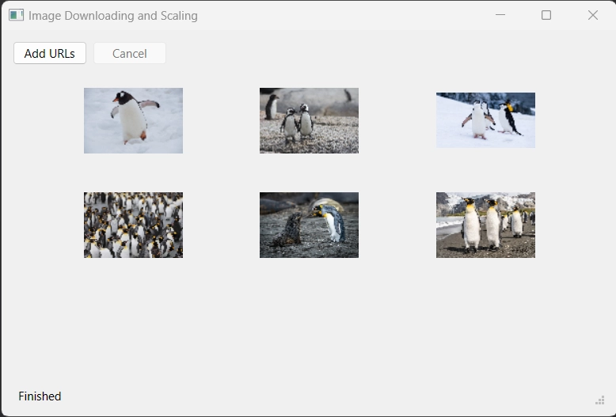

Image Scaling
Demonstrates how to asynchronously download and scale images.
This example shows how to use the QFuture, QPromise, and QFutureWatcher classes to download a collection of images from the network and scale them, without blocking the UI.

The application consists of the following steps:
- Download images form the list of URLs specified by the user.
- Scale the images.
- Show the scaled images in a grid layout.
Let's start with the download:
QFuture<QByteArray> Images::download(const QList<QUrl> &urls) {
The download() method takes a list of URLs and returns a QFuture. The QFuture stores the byte array data received for each downloaded image. To store the data inside the QFuture, we create a QPromise object and report that it has started to indicate the start of the download:
QSharedPointer<QPromise<QByteArray>> promise(new QPromise<QByteArray>());
promise->start();
...
return promise->future();
}
The future associated with the promise is returned to the caller.
Without going into details yet, let's note that the promise object is wrapped inside a QSharedPointer. This will be explained later.
We use QNetworkAccessManager to send network requests and download data for each url:
for (const auto &url : urls) { QSharedPointer<QNetworkReply> reply(qnam.get(QNetworkRequest(url))); replies.push_back(reply);
And here starts the interesting part:
QtFuture::connect(reply.get(), &QNetworkReply::finished).then([=] {
if (promise->isCanceled()) {
if (!promise->future().isFinished())
promise->finish();
return;
}
if (reply->error() != QNetworkReply::NoError) {
if (!promise->future().isFinished())
throw reply->error();
}
promise->addResult(reply->readAll());
// Report finished on the last download
if (promise->future().resultCount() == urls.size())
promise->finish();
}).onFailed([promise] (QNetworkReply::NetworkError error) {
promise->setException(std::make_exception_ptr(error));
promise->finish();
}).onFailed([promise] {
const auto ex = std::make_exception_ptr(
std::runtime_error("Unknown error occurred while downloading."));
promise->setException(ex);
promise->finish();
});
}
...
Instead of connecting to QNetworkReply's signals using the QObject::connect() method, we use QtFuture::connect(). It works similar to QObject::connect(), but returns a QFuture object, that becomes available as soon as the QNetworkReply::finished() signal is emitted. This allows us to attach continuations and failure handlers, as it is done in the example.
In the continuation attached via .then(), we check if the user has requested to cancel the download. If that's the case, we stop processing the request. By calling the QPromise::finish() method, we notify the user that processing has been finished. In case the network request has ended with an error, we throw an exception. The exception will be handled in the failure handler attached using the .onFailed() method. Note that we have two failure handlers: the first one captures the network errors, the second one all other exceptions thrown during the execution. Both handlers save the exception inside the promise object (to be handled by the caller of the download() method) and report that the computation has finished. Also note that, for simplicity, in case of an error we interrupt all pending downloads.
If the request has not been canceled and no error occurred, we read the data from the network reply and add it to the list of results of the promise object:
...
promise->addResult(reply->readAll());
// Report finished on the last download
if (promise->future().resultCount() == urls.size())
promise->finish();
...
If the number of results stored inside the promise object is equal to the number of the urls to be downloaded, there are no more requests to process, so we also report that the promise has finished.
As mentioned earlier, we've wrapped the promise inside a QSharedPointer. Since the promise object is shared between handlers connected to each network reply, we need to copy and use the promise object in multiple places simultaneously. Hence, a QSharedPointer is used.
The download() method is called from the Images::process method. It is invoked when the user presses the "Add URLs" button:
...
connect(addUrlsButton, &QPushButton::clicked, this, &Images::process);
...
After clearing the possible leftovers from previous download, we create a dialog so that the user can specify the URLs for the images to download. Based on the specified URL count, we initialize the layout where the images will be shown and start the download. The future returned by the download() method is saved, so that the user can cancel the download if needed:
void Images::process() { // Clean previous state replies.clear(); addUrlsButton->setEnabled(false); if (downloadDialog->exec() == QDialog::Accepted) { const auto urls = downloadDialog->getUrls(); if (urls.empty()) return; cancelButton->setEnabled(true); initLayout(urls.size()); downloadFuture = download(urls); statusBar->showMessage(tr("Downloading...")); ...
Next, we attach a continuation to handle the scaling step. More on that later:
downloadFuture
.then([this](auto) {
cancelButton->setEnabled(false);
updateStatus(tr("Scaling..."));
scalingWatcher.setFuture(QtConcurrent::run(Images::scaled,
downloadFuture.results()));
})
...
After that we attach onCanceled() and onFailed() handlers:
.onCanceled([this] {
updateStatus(tr("Download has been canceled."));
})
.onFailed([this](QNetworkReply::NetworkError error) {
updateStatus(tr("Download finished with error: %1").arg(error));
// Abort all pending requests
abortDownload();
})
.onFailed([this](const std::exception &ex) {
updateStatus(tr(ex.what()));
})
...
The handler attached via the .onCanceled() method will be called if the user has pressed the "Cancel" button:
...
connect(cancelButton, &QPushButton::clicked, this, &Images::cancel);
...
The cancel() method simply aborts all the pending requests:
void Images::cancel() { statusBar->showMessage(tr("Canceling...")); downloadFuture.cancel(); abortDownload(); }
The handlers attached via .onFailed() method will be called in case an error occurred during one of the previous steps. For example, if a network error has been saved inside the promise during the download step, it will be propagated to the handler that takes QNetworkReply::NetworkError as argument.
If the downloadFuture is not canceled, and didn't report any error, the scaling continuation is executed.
Since the scaling may be computationally heavy, and we don't want to block the main thread, we use QtConcurrent::run(), to launch the scaling step in a new thread.
scalingWatcher.setFuture(QtConcurrent::run(Images::scaled, downloadFuture.results()));
Since the scaling is launched in a separate thread, the user can potentially decide to close the application while the scaling operation is in progress. To handle such situations gracefully, we pass the QFuture returned by QtConcurrent::run() to the QFutureWatcher instance.
The watcher's QFutureWatcher::finished signal is connected to the Images::scaleFinished slot:
connect(&scalingWatcher, &QFutureWatcher<QList<QImage>>::finished,
this, &Images::scaleFinished);
This slot is responsible for showing the scaled images in the UI, and also for handling the errors that could potentially happen during scaling:
void Images::scaleFinished() { const OptionalImages result = scalingWatcher.result(); if (result.has_value()) { const auto scaled = result.value(); showImages(scaled); updateStatus(tr("Finished")); } else { updateStatus(tr("Failed to extract image data.")); } addUrlsButton->setEnabled(true); }
The error reporting is implemented by returning an optional from the Images::scaled() method:
Images::OptionalImages Images::scaled(const QList<QByteArray> &data) { QList<QImage> scaled; for (const auto &imgData : data) { QImage image; image.loadFromData(imgData); if (image.isNull()) return std::nullopt; scaled.push_back(image.scaled(100, 100, Qt::KeepAspectRatio)); } return scaled; }
The Images::OptionalImages type here is simply a typedef for std::optional:
using OptionalImages = std::optional<QList<QImage>>;
Note: We cannot handle the errors from the async scaling operation using the .onFailed() handler, because the handler needs to be executed in the context of Images object in the UI thread. If the user closes the application while the async computation is done, the Images object will be destroyed, and accessing its members from the continuation will lead to a crash. Using QFutureWatcher and its signals allows us to avoid the problem, because the signals are disconnected when the QFutureWatcher is destroyed, so the related slots will never be executed in a destroyed context.
The rest of the code is straightforward, you can check the example project for more details.
Running the Example
To run the example from Qt Creator, open the Welcome mode and select the example from Examples. For more information, visit Building and Running an Example.